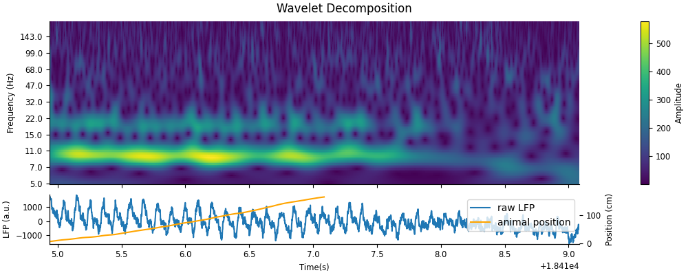
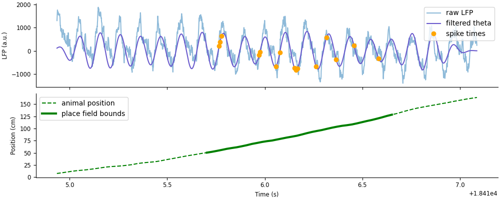
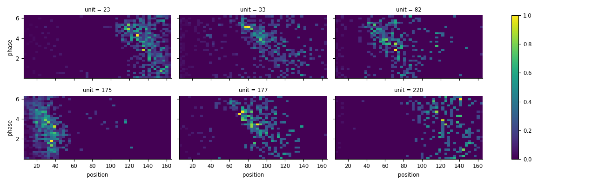
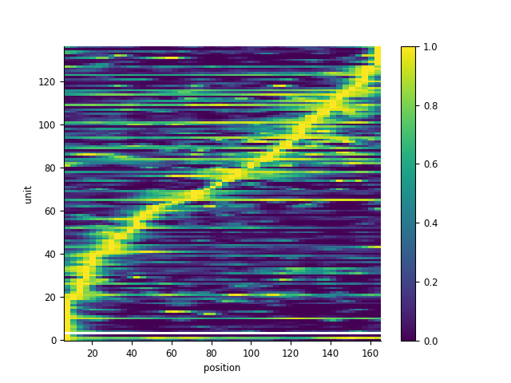

Download
This notebook can be downloaded as 04_place_cells-users.ipynb. See the button at the top right to download as markdown or pdf.
Analyzing hippocampal place cells with Pynapple and NeMoS#
This notebook has had all its explanatory text removed and has not been run. It is intended to be downloaded and run locally (or on the provided binder), working through the questions with your small group.
In this tutorial we will review more advanced applications of pynapple; tuning curves, signal processing, and decoding; as well as fitting GLMs to the data using NeMoS. We’ll apply these methods to demonstrate and visualize some well-known physiological properties of hippocampal activity, specifically phase presession of place cells and sequential coordination of place cell activity during theta oscillations.
This notebook is separated into 5 Parts:
Data wrangling
1D neural tuning and model fitting
Signal processing
2D neural tuning and model fitting
Neural decoding
import workshop_utils
# imports
import math
import os
import matplotlib.pyplot as plt
import numpy as np
import pandas as pd
import requests
import scipy as sp
import seaborn as sns
import tqdm
import pynapple as nap
# necessary for animation
import nemos as nmo
plt.style.use(nmo.styles.plot_style)
# configure pynapple to ignore conversion warning
nap.nap_config.suppress_conversion_warnings = True
Part 1: Data wrangling#
Fetching the data#
The data set we’ll be looking at is from the manuscript Diversity in neural firing dynamics supports both rigid and learned hippocampal sequences. In this study, the authors collected electrophisiology data in rats across multiple sites in layer CA1 of hippocampus to extract the LFP alongside spiking activity of many simultaneous pyramidal units. In each recording session, data were collected while the rats explored a novel environment (a linear or circular track), as well as during sleep before and after exploration. In our following analyses, we’ll focus on the exploration period of a single rat and recording session.
The full dataset for this study can be accessed on DANDI. Since the file size of a recording session can be large from the LFP saved for each recorded channel, we’ll use a smaller file that contains the spiking activity and the LFP from a single, representative channel, which is hosted on OSF. This smaller file, like the original data, is saved as an NWB file.
If you ran the workshop setup script, you should have this file downloaded already. If not, the function we’ll use to fetch it will download it for you. This function is called fetch_data, and can be imported from the workshop_utils module. This function will give us the file path to where the data is stored. We can then use the pynapple function load_file to load in the data, which is able to handle the NWB file type.
# fetch file path
path = workshop_utils.fetch_data("Achilles_10252013_EEG.nwb")
# load data with pynapple
data = nap.load_file(path)
print(data)
This returns a dictionary of pynapple objects that have been extracted from the NWB file. Let’s explore each of these objects.
Note
We will ignore the object theta_phase because we will be computing this ourselves later on in the exercise.
units#
The units field is a TsGroup: a collection of Ts objects containing the spike times of each unit, where the “Index” is the unit number or key. Each unit has the following metadata:
rate: computed by pynapple, is the average firing rate of the neuron across all recorded time points.
location, shank, and cell_type: variables saved and imported from the original data set.
data["units"]
We can access the spike times of a single unit by indexing the TsGroup by its unit number. For example, to access the spike times of unit 1:
data["units"][1]
rem, nrem, and forward_ep#
The next three objects; rem, nrem, and forward_ep; are all IntervalSet objects containing time windows of REM sleep, nREM sleep, and forward runs down the linear maze, respectively.
data["rem"]
data["nrem"]
data["forward_ep"]
All intervals in forward_ep occur in the middle of the session, while rem and nrem both contain sleep epochs that occur before and after exploration.
The following plot demonstrates how each of these labelled epochs are organized across the session.
t_start = data["nrem"].start[0]
fig,ax = plt.subplots(figsize=(10,2), constrained_layout=True)
sp1 = [ax.axvspan((iset.start[0]-t_start)/60, (iset.end[0]-t_start)/60, color="blue", alpha=0.1) for iset in data["rem"]];
sp2 = [ax.axvspan((iset.start[0]-t_start)/60, (iset.end[0]-t_start)/60, color="green", alpha=0.1) for iset in data["nrem"]];
sp3 = [ax.axvspan((iset.start[0]-t_start)/60, (iset.end[0]-t_start)/60, color="red", alpha=0.1) for iset in data["forward_ep"]];
ax.set(xlabel="Time within session (minutes)", title="Labelled time intervals across session", yticks=[])
ax.legend([sp1[0],sp2[0],sp3[0]], ["REM sleep","nREM sleep","forward runs"]);
eeg#
The eeg object is a TsdFrame containing an LFP voltage trace for a single representative channel in CA1.
data["eeg"]
Despite having a single column, this TsdFrame is still a 2D object. We can represent this as a 1D Tsd by indexing into the first column.
data["eeg"][:,0]
position#
The final object, position, is a Tsd containing the linearized position of the animal, in centimeters, recorded during the exploration window.
data["position"]
Positions that are not defined, i.e. when the animal is at rest, are filled with NaN.
This object additionally contains a time_support attribute, which gives the time interval during which positions are recorded (including points recorded as NaN).
data["position"].time_support
Let’s visualize the first 300 seconds of position data and overlay forward_ep intervals.
pos_start = data["position"].time_support.start[0]
fig, ax = plt.subplots(figsize=(10,3))
l1 = ax.plot(data["position"])
l2 = [ax.axvspan(iset.start[0], iset.end[0], color="red", alpha=0.1) for iset in data["forward_ep"]];
ax.set(xlim=[pos_start,pos_start+300], ylabel="Position (cm)", xlabel="Time (s)", title="Tracked position along linear maze")
ax.legend([l1[0], l2[0]], ["animal position", "forward run epochs"])
This plot confirms that positions are only recorded while the animal is moving along the track. Additionally, it is clear that the intervals in forward_ep capture only perios when the animal’s position is increasing, during forward runs.
We’ll save out the following variables that we’ll need throughout the notebook.
position = data["position"]
lfp = data["eeg"][:,0]
spikes = data["units"]
forward_ep = data["forward_ep"]
Restricting the data, computing speed, and visualization#
For the following exercises, we’ll only focus on periods labeled as forward runs aloong the linear track. We can extract this information using the interval set forward_ep.
1. Restrict position to forward_ep and confirm that there are no nan values in the restricted data set.#
# restrict position and check for nans
position =
We also want the speed of the animal during forward runs. We can get this using the pynapple object method derivative. Conveniently, this will account for discontinuous intervals either in the time support, or by inputting the optional argument ep, the intervals over which you want to compute the derivative.
Note, however, that the output of the derivative function is velocity. For the following analyses, we only care about the magnitude, or speed; therefore, we’ll need to take the absolute value of the output to get our variable of interest.
2. Calculate velocity using the derivative method on position during forward runs. Use np.abs to convert the velocity into speed.#
# calculate speed
speed =
To get a sense of what the LFP looks like while the animal runs down the linear track, we can plot each variable; lfp, position, and speed; side-by-side. Let’s do this for an example run; specifically, we’ll look at forward run 9.
3. Create an interval set for forward run index 9, adding 2 seconds to the end of the interval. Restrict lfp and position to this epoch.#
ex_ep =
ex_lfp =
ex_position =
ex_speed =
Let’s plot the example LFP trace and animal position and speed. Plotting Tsd objects will automatically put time on the x-axis.
fig, axs = plt.subplots(2, 1, constrained_layout=True, figsize=(10, 4), sharex=True)
# plot LFP
axs[0].plot(ex_lfp)
axs[0].set_title("Local Field Potential on Linear Track")
axs[0].set_ylabel("LFP (a.u.)")
# plot animal's position
l1, = axs[1].plot(ex_position)
axs[1].set_title("Animal Position on Linear Track")
axs[1].set_ylabel("Position (cm)")
axs[1].set_xlabel("Time (s)");
# plot animal's speed
ax = axs[1].twinx()
l2, = ax.plot(ex_speed, c="orange")
ax.set_title("Animal Position on Linear Track")
ax.set_ylabel("Speed (cm/s)")
axs[1].legend([l1,l2], ["position","speed"])
Figure check

As we would expect, there is a strong theta oscillation dominating the LFP while the animal runs down the track. This oscillation is weaker after the run is complete.
Part 2: 1D neural tuning and model fitting#
Computing 1D tuning curves: place fields#
First, we will look at the place selectivity of each unit. We can find place firing preferences of each unit by using the function nap.compute_tuning_curves.
We’ll filter for units that fire at least 1 Hz and at most 10 Hz when the animal is running forward along the linear track. This will select for units that are active during our window of interest and eliminate putative interneurons (i.e. fast-firing inhibitory neurons that don’t usually have place selectivity). Afterwards, we’ll compute the tuning curves for these sub-selected units over position.
1. Restrict spikes to forward_ep and select for units whose rate is at least 1 Hz and at most 10 Hz#
# save the filtered spikes in the following variable
good_spikes =
2. Compute tuning curves with respect to position for units in good_spikes.#
Use 50 position bins
Name the feature
"position"using the optional argumentfeature_names
place_fields =
This function returns tuning curves as an xarray.DataArray, with coordinates for unit (first dimension) and position (second dimension). An xarray.DataArray object provides convenient tools for plotting and other manipulations, and it scales well for tuning curves with more than 1 feature.
Tip
The reason nap.compute_tuning_curves returns a xarray.DataArray and not a Pynapple object is because the array elements no longer correspond to time, which Pynapple objects require.
We can use the xarray.DataArray plot method to easily plot each unit, focusing on three example units.
neurons = [82, 92, 220]
p = place_fields.sel(unit=neurons).plot(x="position", col="unit")
p.set_ylabels("firing rate (Hz)")
Figure check

We can see clear spatial selectivity in these example units, where firing rate peaks at specific positions along the track.
Let’s repeat this exercise, but instead compute tuning curves as a function of speed instead of position.
3. Compute tuning curves with respect to speed for units in good_spikes.#
Use 30 speed bins
Name the feature
"speed"using the optional argumentfeature_names
speed_fields =
Figure check

Estimating tuning curves using a population GLM#
Note
This afternoon, we’ll show how to cross-validate across basis identity, which you can use to choose the basis.
4. Compute observations by counting spikes, using the pynapple method count, on our TsGroup of spike times, good_spikes.#
Use a
bin_sizeof 10 ms (0.01s)Pass
forward_epas the optional argumentepto make sure we’re only counting during forward runs.
bin_size =
counts =
5. Upsample position and speed using the pynapple method interpolate with the time stamps from counts.#
Use a
bin_sizeof 10 ms (0.01s)
up_position =
up_speed =
Note
This afternoon, we’ll show how to cross-validate across basis identity, which you can use to choose the basis.
6. Instantiate the basis by doing the following:#
Create a separate basis object for each model input (speed and position).
Use
BSplineEvalbasis with, using 12 basis functions for position and 6 basis functions for speed.Provide a label for each basis (“position” and “speed”).
We’ll use a helper function to visualize the resulting basis functions.
position_basis =
speed_basis =
workshop_utils.plot_pos_speed_bases(position_basis, speed_basis)
Figure check

However, now we have an issue: in all our previous examples, we had a single basis object, which took a single input to produce a single array which we then passed to the GLM object as the design matrix. What do we do when we have multiple basis objects?
To do this, we can use NeMoS basis composition, where you can add the two bases together and obtain a new additive basis. We can similarly call compute_features on this additive basis, passing both position and speed, to obtain the same design matrix. For people familiar with NumPy, this is equivalent to calling basis.compute_features() for each basis separately and then concatenate the outputs.
7. Create an additive basis by adding together position_basis and speed_basis.#
additive_basis =
8. Create a design matrix by passing up_position and up_speed to the basis method compute_features#
Make sure the features are passed in the same order that the basis objects were added together!
X =
Notice that, since we passed pynapple objects to the basis object, we got a pynapple object back, preserving the time stamps. Additionally, X has the same number of time points as our input position and speed, but 20 columns. The columns come from n_basis_funcs from each basis (10 for position, 10 for speed).
As we’ve done before, we can now use the Poisson GLM from NeMoS to learn the combined model.
9. Fit a GLM by doing the following:#
Initialize
PopulationGLMUse the “LBFGS” solver and pass
{"tol": 1e-12}tosolver_kwargs.Fit the data, passing the design matrix
Xand spike countscountsto the glm object.
# define the model
glm =
# fit
glm.fit(
Let’s check first if our model can accurately predict the tuning curves we displayed above. We can use the predict function of NeMoS and then compute new tuning curves using pynapple.
10. Use predict to calculated the predicted firing rate of our model. Use the predicted rate to compute predicted tuning curves using nap.compute_tuning_curves.#
Remember to convert the predicted firing rate to spikes per second!
Use 50 bins for position tuning curves and 30 bins for speed tuning curves.
# predict the model's firing rate
predicted_rate =
# compute the position and speed tuning curves using the predicted firing rate.
glm_tuning_pos =
glm_tuning_speed =
We can plot the results to compare the model and data tuning curves.
fig = workshop_utils.plot_position_speed_tuning(place_fields.sel(unit=neurons), speed_fields.sel(unit=neurons), glm_tuning_pos, glm_tuning_speed);
Figure check

We can see that this model does a good job capturing both the position and the speed.
Part 3: Signal processing#
Getting the Wavelet Decomposition#
Next we’ll use pynapple’s signal processing module to analyze LFP and visualize phase precessing within hippocampal place cells. We’ll start by performing a wavelet decomposition on the LFP trace during example run 9 that saved in Part 1 question 3 as the Tsd ex_lfp. We can do this in pynapple using the function nap.compute_wavelet_transform.
A continuous wavelet transform decomposes a signal into a set of wavelets, in this case Morlet wavelets, that span both frequency and time. You can think of the wavelet transform as a cross-correlation between the signal and each wavelet, giving the similarity between the signal and various frequency components at each time point of the signal. Similar to a Fourier transform, this gives us an estimate of what frequencies are dominating a signal. Unlike the Fourier tranform, however, the wavelet transform gives us this estimate as a function of time.
We must define the frequency set that we’d like to use for our decomposition. We can do this with the numpy function np.geomspace, which returns numbers evenly spaced on a log scale. We pass the lower frequency, the upper frequency, and number of samples as positional arguments.
1. Define 100 log-spaced samples between 5 and 200 Hz using np.geomspace#
# 100 log-spaced samples between 5Hz and 200Hz
freqs =
We can now compute the wavelet transform on our LFP data during the example run using nap.compute_wavelet_transform by passing both ex_lfp and freqs. We’ll also pass the optional argument fs, which is known to be 1250Hz from the study methods.
2. Compute the wavelet transform of ex_lfp using freqs defined above.#
Supply the known sampling rate, 1250 Hz, as the optional argument
fs
sample_rate = 1250
ex_cwt =
Note
If fs is not provided, it can be inferred from the time series rate attribute, e.g. ex_lfp.rate. However, while inferred rate is close to the true sampling rate, it can introduce a small floating-point error. Therefore, it is better to supply the true sampling rate when it is known.
We can visualize the results by plotting a heat map of the calculated wavelet scalogram.
fig, axs = plt.subplots(2, 1, figsize=(10,4), constrained_layout=True, height_ratios=[1.0, 0.3], sharex=True)
fig.suptitle("Wavelet Decomposition")
amp = np.abs(ex_cwt.values)
cax = axs[0].pcolormesh(ex_cwt.t, freqs, amp.T)
axs[0].set(ylabel="Frequency (Hz)", yscale='log', yticks=freqs[::10], yticklabels=np.rint(freqs[::10]));
axs[0].minorticks_off()
fig.colorbar(cax,label="Amplitude")
p1 = axs[1].plot(ex_lfp)
axs[1].set(ylabel="LFP (a.u.)", xlabel="Time(s)")
axs[1].margins(0)
ax = axs[1].twinx()
p2 = ax.plot(ex_position, color="orange")
ax.set_ylabel("Position (cm)")
ax.legend([p1[0], p2[0]],["raw LFP","animal position"])
Figure check

You should see a strong presence of theta in the 6-12Hz frequency band while the animal runs down the track, which dampens during rest.
Computing theta phase#
To capture phase precession, we will need to compute the phase of the theta oscillation present in the LFP. Similar to our analysis of position, we only want to compute theta phase during forward runs down the track, where the theta power will be strongest.
3. Restrict lfp to forward_ep.#
Confirm that
positionis already be restricted to this epoch from Part 1: question 1. If not, also restrictpositiontoforward_ep
lfp =
position =
We can extract the theta oscillation by applying a bandpass filter on the raw LFP. To do this, we use the pynapple function nap.apply_bandpass_filter. Conveniently, this function will recognize and handle splits in the epoched data (i.e. applying the filtering separately to discontinuous epochs), so we don’t have to worry about passing signals that have been split in time.
4. Using nap.apply_bandpass_filter, filter lfp for theta within a 6-12 Hz range.#
Same as before, pass the sampling rate of 1250 Hz (
sample_rate)
theta_band =
We can visualize the output by plotting the filtered signal with the original signal.
ex_run_ep = nap.IntervalSet(start=forward_ep[9].start, end=forward_ep[9].end)
fig = plt.figure(constrained_layout=True, figsize=(10, 3))
plt.plot(lfp.restrict(ex_run_ep), label="raw")
plt.plot(theta_band.restrict(ex_run_ep), label="filtered")
plt.xlabel("Time (s)")
plt.ylabel("LFP (a.u.)")
plt.title("Bandpass filter for theta oscillations (6-12 Hz)")
plt.legend();
Figure check

Finally, we need to extract the phase of theta from the filtered signal. We can do this by taking the angle of the Hilbert transform.
5. Use sp.signal.hilbert to perform the Hilbert transform of theta_band, using np.angle to extract the angle. Convert the output angle to a [0, 2pi] range, and store the result in a Tsd object.#
TIP: don’t forget to pass the time support!
The line for wrapping the phase from [0, 2pi] is provided, by adding 2pi to all negative angles
# compute the phase
phase =
phase[phase < 0 ] += 2 * np.pi # wrap to [0,2pi]
# store as a Tsd
theta_phase =
Let’s plot the phase on top of the filtered LFP signal, zooming in on a few cycles.
ex_run_shorter = nap.IntervalSet(ex_run_ep.start[0], ex_run_ep.start[0]+0.5)
fig,axs = plt.subplots(2,1,figsize=(10,4), constrained_layout=True, sharex=True)#, height_ratios=[2,1])
ax = axs[0]
ax.plot(lfp.restrict(ex_run_shorter))
ax.set_ylabel("LFP (a.u.)")
ax = axs[1]
p1 = ax.plot(theta_phase.restrict(ex_run_shorter), color='r')
ax.set_ylabel("Phase (rad)")
ax.set_xlabel("Time (s)")
ax = ax.twinx()
p2 = ax.plot(theta_band.restrict(ex_run_shorter))
ax.set_ylabel("Filtered LFP (a.u.)")
ax.legend([p1[0],p2[0]],["theta phase","filtered LFP"])
Figure check

Visualizing phase precession within a single unit#
As an initial visualization of phase precession, we’ll look at a single traversal of the linear track. First, let’s look at how the timing of an example unit’s spikes lines up with the LFP and theta. To plot the spike times on the same axis as the LFP, we’ll use the pynapple object’s method value_from to align the spike times with the theta amplitude. For our spiking data, this will find the amplitude closest in time to each spike. Let’s start by applying value_from on unit 177, who’s place field is cenetered on the linear track, using theta_band to align the amplityde of the filtered LFP.
6. Use the pynapple object method value_from to find the value of theta_band corresponding to each spike time from unit 177.#
unit = 177
spike_theta =
Let’s plot spike_theta on top of the LFP and filtered theta, as well as visualize the animal’s position along the track.
fig,axs = plt.subplots(2, 1, figsize=(10,4), constrained_layout=True, sharex=True)
axs[0].plot(lfp.restrict(ex_run_ep), alpha=0.5, label="raw LFP")
axs[0].plot(theta_band.restrict(ex_run_ep), color="slateblue", label="filtered theta")
axs[0].plot(spike_theta.restrict(ex_run_ep), 'o', color="orange", label="spike times")
axs[0].set(ylabel="LFP (a.u.)")
axs[0].legend()
axs[1].plot(ex_position, '--', color="green", label="animal position")
axs[1].plot(ex_position[(ex_position > 50).values & (ex_position < 130).values], color="green", lw=3, label="place field bounds")
axs[1].set(ylabel="Position (cm)", xlabel="Time (s)")
axs[1].legend()
Figure check

As the animal runs through unit 177’s place field (thick green), the unit spikes (orange dots) at specific points along the theta cycle dependent on position: starting at the rising edge, moving towards the trough, and ending at the falling edge.
We can exemplify this pattern by plotting the spike times aligned to the phase of theta. We’ll want the corresponding phase of theta at which the unit fires as the animal is running down the track, which we can again compute using the method value_from.
7. Compute the value of theta_phase corresponding to each spike time from unit 177.#
spike_phase =
To visualize the results, we’ll recreate the plot above, but instead with the theta phase.
fig,axs = plt.subplots(3, 1, figsize=(10,6), constrained_layout=True, sharex=True)
axs[0].plot(theta_band.restrict(ex_run_ep), color="slateblue", label="filtered theta")
axs[0].plot(spike_theta.restrict(ex_run_ep), 'o', color="orange", label="spike times")
axs[0].set(ylabel="LFP (a.u.)", title="Spike times relative to filtered theta")
axs[0].legend()
axs[1].plot(theta_phase.restrict(ex_run_ep), color="slateblue", label="theta phase")
axs[1].plot(spike_phase.restrict(ex_run_ep), 'o', color="orange", label="spike times")
axs[1].set(ylabel="Phase (rad)", title="Spike times relative to theta phase")
axs[1].legend()
axs[2].plot(ex_position, '--', color="green", label="animal position")
axs[2].plot(ex_position[(ex_position > 50).values & (ex_position < 130).values], color="green", lw=3, label="place field bounds")
axs[2].set(ylabel="Position (cm)", xlabel="Time (s)", title="Animal position")
axs[2].legend()
Figure check

We now see a negative trend in the spike phase as the animal moves through unit 177’s place field. This phemomena is known as phase precession: the phase at which a unit spikes precesses (gets earlier) as the animal runs through that unit’s place field. Explicitly, that unit will spike at late phases of theta (higher radians) in earlier positions in the field, and fire at early phases of theta (lower radians) in late positions in the field.
We can observe this phenomena on average across the session by relating the spike phase to the spike position.
8. Compute the position corresponding to each spike for example unit 177.#
spike_position =
Now we can plot the spike phase against the spike position in a scatter plot.
fig, axs = plt.subplots(figsize=(5,3))
axs.plot(spike_position, spike_phase, 'o')
axs.set_ylabel("Phase (rad)")
axs.set_xlabel("Position (cm)")
Figure check

Similar to what we saw in a single run, there is a negative relationship between theta phase and field position, characteristic of phase precession.
Part 4: 2D neural tuning and model fitting#
Computing 2D tuning curves: position vs. phase#
The scatter plot above can be similarly be represented as a 2D tuning curve over position and phase. We can compute this using the same function, nap.compute_tuning_curves, but now passing second input, features, as a 2-column TsdFrame containing the two target features.
To do this, we’ll need to combine position and theta_phase into a TsdFrame. For this to work, both variables must have the same length. Similar to what we did in Part 2, we can achieve this by upsampling position to the length of theta_phase using the pynapple object method interpolate. Once they’re the same length, they can be combined into a single TsdFrame and used to compute 2D tuning curves.
1. Interpolate position to the time points of theta_phase.#
upsampled_pos =
2. Stack upsampled_pos and theta_phase together into a single TsdFrame#
For stacking arrays, you can use a numpy function like
np.stack.Tip: you may need to transpose to make sure time is in the first dimension of the stacked array
Make sure to name your
TsdFramecolumns"position"and"phase"
# store the resulting TsdFrame into the following variable
features =
3. Apply nap.compute_tuning_curves with features on our subselected group of units, good_spikes#
Use 50 bins for position and 30 bins for theta phase
tuning_curves =
We can plot 2D tuning curves for each unit and phase precession in some example units.
neurons = [23, 33, 82, 175, 177, 220]
tc_norm = tuning_curves / tuning_curves.max(axis=(1,2))
p = tc_norm.sel(unit=neurons).plot(x="position", y="phase", col="unit", col_wrap=3, size=2, aspect=2)
Figure check
You should be able to notice a negative relationship between position and phase, characteristic of phase precession.
Estimating 2D tuning curves using 2D basis functions#
How can we model 2D tuning curves in a GLM? Similar to Part 2, we can define a 2D basis by using NeMoS basis composition, but instead multiplying two basis objects. In fact, we can use both addition and multiplication together to create arbitrarily complex, multidimensional basis objects.
First, we’ll create a basis object for theta phase, specifically using CyclicBSplineEval.
4. Instantiate a CyclicBSplineEval basis object for phase, using 10 basis functions.#
Provide the label
"phase"for the basis.If necessary, reinstantiate the basis objects for position,
position_basis, and speed,speed_basis, as you did in Part 2 question 6.
phase_basis =
5. Create the full basis by multiplying position_basis and phase_basis and adding speed_basis.#
full_basis =
Before we can call compute_features, we need to make sure theta_phase has the same number of time points as counts. Since theta_phase has more time points than counts, we’ll need to downsample the number of time points. We can do this using the pynapple object method bin_average. This function will average values within a specified bin size. We can achieve the same sampling rate by using the same bin size as we used for our spike counts.
6. Downsample theta_phase using bin_average and a bin size of 0.01 s.#
If necessary, redefine
up_positionandup_speedthe same as Part 2 question 5
bin_theta =
7. Create a design matrix by calling compute_features on full_basis using up_position, bin_theta, and up_speed#
bin_theta =
8. Fit a GLM by doing the following:#
Initialize
PopulationGLMUse the “LBFGS” solver and pass
{"tol": 1e-12}tosolver_kwargs.Fit the data, passing the design matrix
Xand spike countscountsto the glm object.
bin_theta =
9. Use predict to calculated the predicted firing rate of our model. Use the predicted rate to compute predicted tuning curves using nap.compute_tuning_curves.#
Remember to convert the predicted firing rate to spikes per second!
Compute 1D tuning curves for position and speeds in the same way as Part 2 question 10.
Compute 2D tuning curves for position x phase using
predicted_rateand the TsdFramefeatures, using 50 bins for position and 30 bins for phase.
# predict the model's firing rate
predicted_rate =
# compute the 1D tuning curves for position and speed
glm_pf =
glm_speed =
# compute 2D tuning curves for position x phase
glm_pos_theta =
Figure check

Bonus Exercise#
As an bonus, more open-ended exercise, we can investigate all the scientific decisions that we swept under the rug: should we regularize the model? What basis should we use? Do we need all inputs? If you’re feeling ambitious, here are some suggestions to answer these questions:
Try to fit and compare the results we just obtained with different models:
A model with position as the only predictor.
A model with speed as the only predictor.
A model with phase as the only predictor
Introduce L1 (Lasso) regularization and fit models with increasingly large penalty strengths (\(\lambda\)). Plot the regularization path showing how each coefficient changes with \(\lambda\). Identify which coefficients remain non-zero longest as \(\lambda\) increases - these correspond to the most informative predictors.
# enter code here
Part 5: Neural decoding#
Decoding position from spiking activity#
Finally we’ll do a popular analysis in the rat hippocampus sphere: Bayesian decoding. This analysis is an elegent application of Bayes’ rule in predicting the animal’s location (or other behavioral variables) given neural activity at some point in time. Refer to the dropdown box below for a more in-depth explanation.
Background: Bayesian decoding
Recall Bayes’ rule, written here in terms of our relevant variables:
Our goal is to compute the unknown posterior \(P(position|spikes)\) given known prior \(P(position)\) and known likelihood \(P(spikes|position)\).
\(P(position)\), also known as the occupancy, is the probability that the animal is occupying some position. This can be computed exactly by the proportion of the total time spent at each position, but in many cases it is sufficient to estimate the occupancy as a uniform distribution, i.e. it is equally likely for the animal to occupy any location.
The next term, \(P(spikes|position)\), which is the probability of seeing some sequence of spikes across all neurons at some position. Computing this relys on the following assumptions:
Neurons fire according to a Poisson process (i.e. their spiking activity follows a Poisson distribution)
Neurons fire independently from one another.
While neither of these assumptions are strictly true, they are generally reasonable for pyramidal cells in hippocampus and allow us to simplify our computation of \(P(spikes|position)\)
The first assumption gives us an equation for \(P(spikes|position)\) for a single neuron, which we’ll call \(P(spikes_i|position)\) to differentiate it from \(P(spikes|position) = P(spikes_1,spikes_2,...,spikes_N|position)\), or the total probability across all \(N\) neurons. The equation we get is that of the Poisson distribution:
where \(f_i(position)\) is the firing rate of the neuron at position \((position)\) (i.e. the tuning curve), \(\tau\) is the width of the time window over which we’re computing the probability, and \(n\) is the total number of times the neuron spiked in the time window of interest.
The second assumptions allows us to simply combine the probabilities of individual neurons. Recall the product rule for independent events: \(P(A,B) = P(A)P(B)\) if \(A\) and \(B\) are independent. Treating neurons as independent, then, gives us the following:
The final term, \(P(spikes)\), is inferred indirectly using the law of total probability:
Another way of putting it is \(P(spikes)\) is the normalization factor such that \(\sum_{position} P(position|spikes) = 1\), which is achived by dividing the numerator by its sum.
If this method looks daunting, we have some good news: pynapple has it implemented already in the function nap.decode_bayes. All we’ll need are the spikes, the tuning curves, and the width of the time window \(\tau\).
Aside: Cross-validation
Generally this method is cross-validated, which means you train the model on one set of data and test the model on a different, held-out data set. For Bayesian decoding, the “model” refers to the model likelihood, which is computed from the tuning curves.
If we want to decode an example run down the track, our training set should omit this run before computing the tuning curves. We can do this by using the IntervalSet method set_diff, to take out the example run epoch from all run epochs. Next, we’ll restrict our data to these training epochs and re-compute the place fields using nap.compute_tuning_curves. We’ll also apply a Gaussian smoothing filter to the place fields, which will smooth our decoding results down the line.
The code cell below will do these steps for you.
from scipy.ndimage import gaussian_filter1d
# hold out trial from place field computation
run_train = forward_ep.set_diff(ex_run_ep)
# get position of training set
position_train = position.restrict(run_train)
# compute place fields using training set
place_fields = nap.compute_tuning_curves(spikes, position_train, bins=50, feature_names=["position"])
# smooth place fields
place_fields.data = gaussian_filter1d(place_fields.data, 1, axis=-1)
# plot sorted, normalized tuning curves
idx = place_fields.argmax(axis=1)
place_fields_sorted = place_fields.sortby(idx)
place_fields_sorted["unit"] = np.arange(place_fields_sorted.shape[0])
p = (place_fields_sorted / place_fields_sorted.max(axis=1)).plot()
Figure check

We can decode any number of features using the function nap.decode_bayes, which will decode any number of features given by the input tuning_curves, computed by nap.compute_tuning_curves.
1. Use nap.decode_bayes to decode position during ex_run_ep#
Use 40 ms time bins
decoded_position, decoded_prob =
Let’s plot decoded position with the animal’s true position. We’ll overlay them on a heat map of the decoded probability to visualize the confidence of the decoder.
fig,ax = plt.subplots(figsize=(10, 4), constrained_layout=True)
c = ax.pcolormesh(decoded_position.index,place_fields.position,np.transpose(decoded_prob))
ax.plot(decoded_position, "--", color="red", label="decoded position")
ax.plot(ex_position, color="red", label="true position")
ax.legend()
fig.colorbar(c, label="decoded probability")
ax.set(xlabel="Time (s)", ylabel="Position (cm)", );
Figure check

While the decoder generally follows the animal’s true position, there is still a lot of error in the decoder, especially later in the run. We can improve the decoder error by smoothing the spike counts. nap.decode_bayes provides the option to do this for you by specifying sliding_window_size, which specifies the width, in number of bins, of a uniform (all ones) kernel to convolve with the spike counts. This is equivalent to applying a moving sum to adjacent bins, where the width of the kernel is the number of adjacent bins being added together. This is equivalent to counting spikes in a sliding window that shifts in shorter increments than the window’s width, resulting in bins that overlap. This combines the accuracy of using a wider time bin with the temporal resolution of a shorter time bin.
For example, let’s say we want a sliding window of \(200 ms\) that shifts by \(40 ms\). This is equivalent to summing together 5 adjacent \(40 ms\) bins, or convolving spike counts in \(40 ms\) bins with a length-5 array of ones (\([1, 1, 1, 1, 1]\)). Let’s visualize this convolution.
ex_counts = spikes[unit].restrict(ex_run_ep).count(0.04)
workshop_utils.animate_1d_convolution(ex_counts, np.ones(5), tsd_label="original counts", kernel_label="moving sum", conv_label="convolved counts")
The count at each time point is computed by convolving the kernel (yellow), centered at that time point, with the original spike counts (blue). For a length-5 kernel of ones, this amounts to summing the counts in the center bin with two bins before and two bins after (shaded green, top). The result is an array of counts smoothed out in time (green, bottom).
2. Decode the same run as above, now using sliding window size of 5 bins.#
smth_decoded_position, smth_decoded_prob =
Let’s plot the results.
fig,ax = plt.subplots(figsize=(10, 4), constrained_layout=True)
c = ax.pcolormesh(smth_decoded_position.index,place_fields.position,np.transpose(smth_decoded_prob))
ax.plot(smth_decoded_position, "--", color="red", label="decoded position")
ax.plot(ex_position, color="red", label="true position")
ax.legend()
fig.colorbar(c, label="decoded probability")
ax.set(xlabel="Time (s)", ylabel="Position (cm)", );
Figure check

This gives us a much closer approximation of the animal’s true position.
Units phase precessing together creates fast, spatial sequences around the animal’s true position. We can reveal this by decoding at an even shorter time scale, which will appear as smooth errors in the decoder.
3. Decode again using a smaller bin size of \(10 ms\) and sliding window size of 5 bins.#
smth_decoded_position, smth_decoded_prob =
We’ll make the same plot as before to visualize the results, but plot it alongside the raw and filtered LFP.
fig, axs = plt.subplots(2, 1, figsize=(10, 4), constrained_layout=True, height_ratios=[3,1], sharex=True)
c = axs[0].pcolormesh(smth_decoded_prob.index, smth_decoded_prob.columns, np.transpose(smth_decoded_prob))
p1 = axs[0].plot(smth_decoded_position, "--", color="r")
p2 = axs[0].plot(ex_position, color="r")
axs[0].set_ylabel("Position (cm)")
axs[0].legend([p1[0],p2[0]],["decoded position","true position"])
fig.colorbar(c, label = "predicted probability")
axs[1].plot(lfp.restrict(ex_run_ep))
axs[1].plot(theta_band.restrict(ex_run_ep))
axs[1].set_ylabel("LFP (a.u.)")
fig.supxlabel("Time (s)");
Figure check

The estimated position oscillates with cycles of theta, where each “sweep” is referred to as a “theta sequence”. Fully understanding the properties of theta sequences and their role in learning, memory, and planning is an active topic of research in Neuroscience!
Bonus Exercise 1#
Pynapple has another decoding method, nap.decode_template, that is agnostic to the underlying noise model of the data. In other words, where the above implementation of Bayesian decoding is specific to spiking data (Poisson distributed data), template decoding can be applied to any data modality. As a bonus exercise, you can try decoding position using this method and compare the results to the Bayesian decoder used above!
# enter code here
Bonus Exercise 2#
Instead of using place fields computed from the data, what if we used the predicted tuning curves by our GLM in Part 2 to do decoding? As a second bonus exercise, you can try Bayesian decoding using GLM-predicted tuning curves and compare the results to the decoding above.
References#
The data in this tutorial comes from Grosmark, Andres D., and György Buzsáki. “Diversity in neural firing dynamics supports both rigid and learned hippocampal sequences.” Science 351.6280 (2016): 1440-1443.